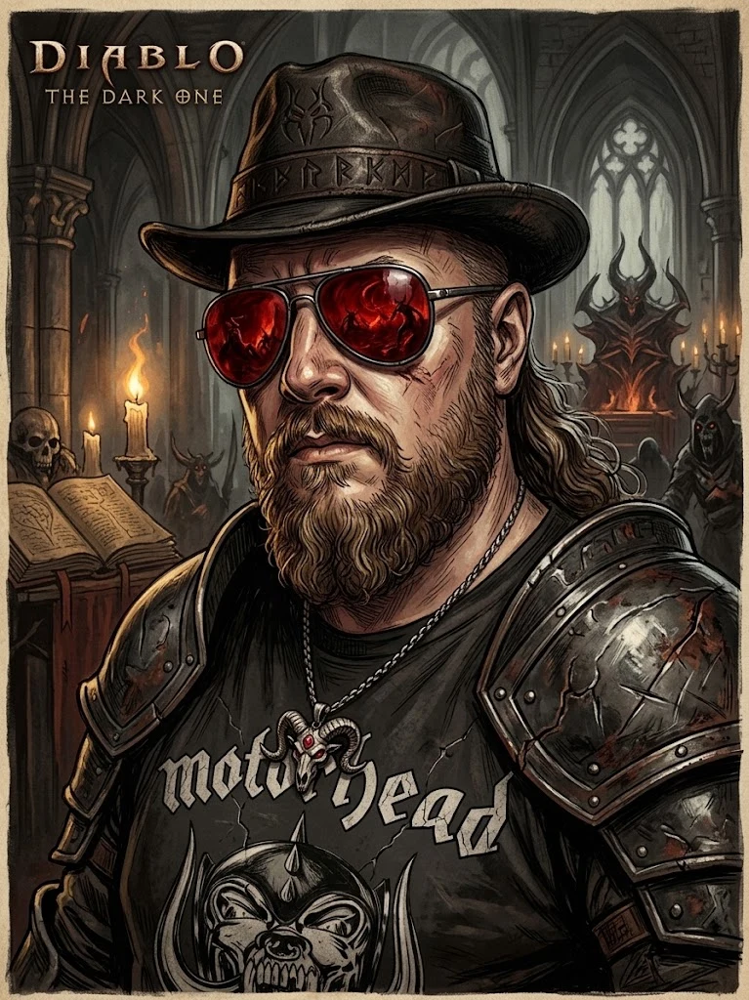

Hi!
Mein Name ist Björn und der Horadic Codex ist ein kleines Fan-Projekt von mir, das ich in meiner Freizeit erstellt habe.
Als Webdesigner wollte ich einfach mal wieder was anderes sehen, als Flat-Design, Minimalismus und den neuesten Trends. Ich wollte eine Seite, die einfach einlädt, darin zu stöbern. Die entgegen aktueller Trends viel zu viel Charakter hat ;-)
Da ich aber weder Illustrator bin, noch ein großer Texter (was man an dem Text hier ziemlich deutlich sehen kann), kam für diese Seite ordentlich KI zum Einsatz.
Um es gleich vorweg zu nehmen: Ja, ein großer Teil der Bilder sind durch KI generiert worden. Und die meisten Texte auch. Denn leider kann ich mir einen professionellen Illustrator nicht leisten, ebenso wenig einen Texter. Und in dem bisschen Freizeit, die man so hat, möchte ich an so einem Projekt halt Spaß haben.
Und das führt mich zu dem Grund dieses Textes:
(Web)Designer und KI — dürfen wir das überhaupt benutzen?
Ist das nicht irgendwie falsch? Ehrlich gesagt: Ich wage es nicht, ein festes Urteil darüber zu fällen. Ich kann nur meine Sicht wiedergeben. Und die sagt aktuell: Es kommt darauf an. Tolle Aussage, was? Aber es trifft es ziemlich genau.
Für so ein Ein-Mann-Fan-Projekt, klar, warum nicht? Es tut keinem weh, man nimmt niemandem damit Arbeit und Geld weg. Ich verdiene damit nichts, andere auch nicht. Und ich nutze es, damit die Seite auch nach was aussieht.
Und wenn jemand sagen würde: „Hey, das kann ich dir auch wirklich zeichnen, malen oder wie auch immer" — ich würde es sofort austauschen. Denn: Man sieht immer noch recht gut, was KI macht und was nicht. Daher ist es kein Ersatz für wahre Künstler. Es ist eine Krücke, die man für kleine Sachen nutzen kann.
Und wie steht's beim Coden?
Klar, ich nutze KI dabei. Warum auch nicht? Ich nutze unglaublich viele Hilfsmittel bei meiner Arbeit, KI ist da einfach nur ein Werkzeug, mehr nicht. Letztlich muss ich ja doch immer noch mal drüber schauen. Und mehr als einmal musste ich, auch in diesem Projekt, die KI korrigieren oder auf den richtigen Weg bringen.
Also: Jap, ihr seht hier viel KI. Das mag vielleicht den einen oder anderen stören. Aber: Es ist nicht aus der Intention heraus, Geld zu sparen. Es ist einfach aus Mangel an anderen Möglichkeiten heraus entstanden.
Daher: Unterstützt Künstler wo immer es geht! Gerade wenn Geld im Spiel ist, nehmt keine KI, sucht Artists, die sowas machen. Und bezahlt sie :-)
alles Liebe
Björn